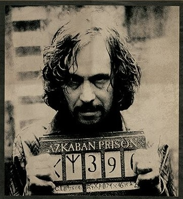
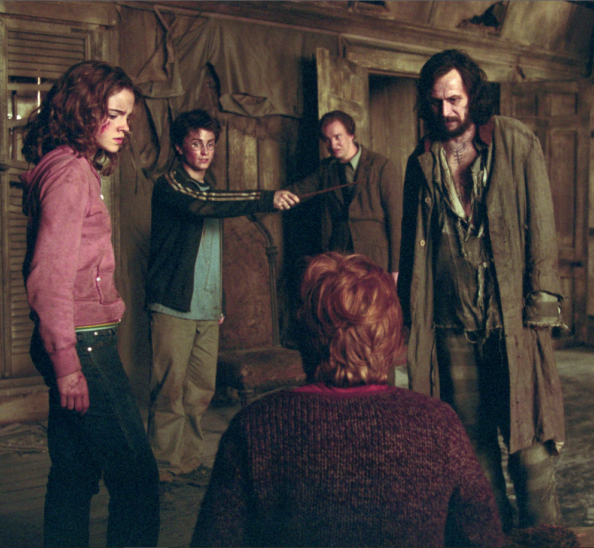
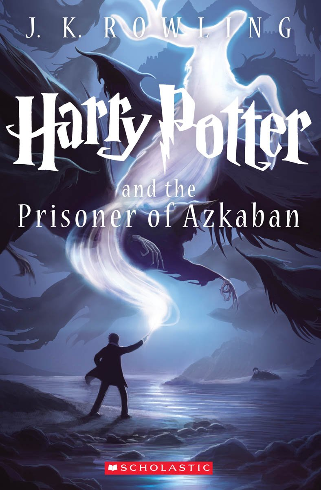
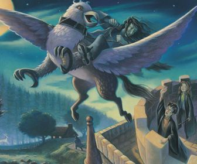
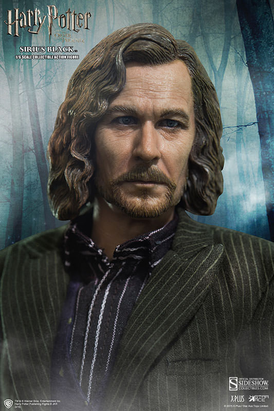
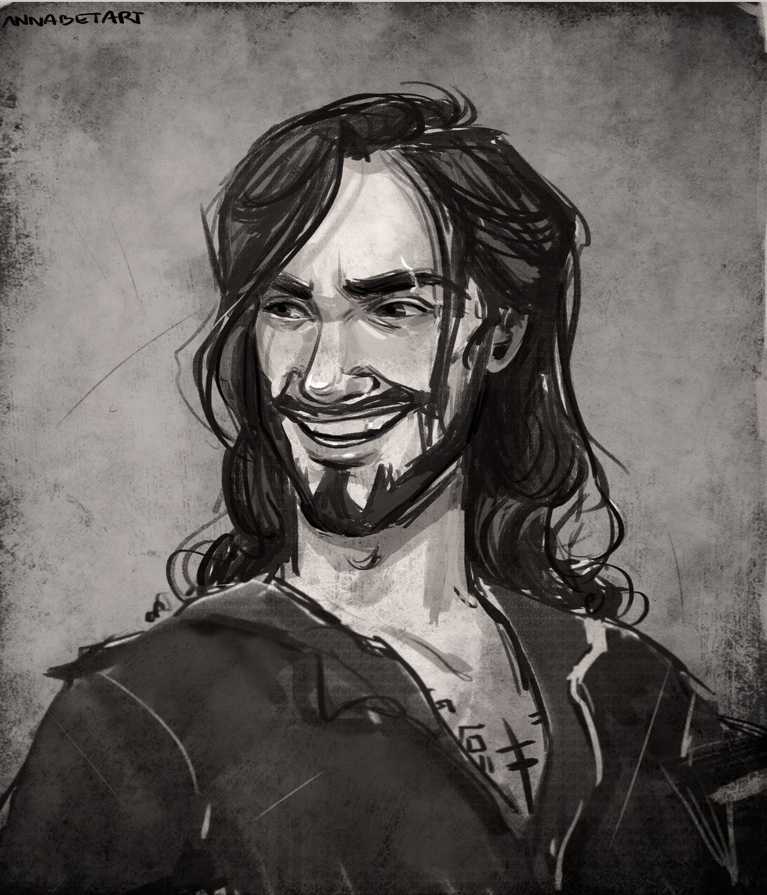

This Blog is completly focus in communicate the relation of the history narrated in Harry Potter and the prisoner of Azkaban and the Sirius Black character.
The posts displayed here denote the characteristics, history and global information of Sirius Black, its style and art is a
compendium of creators and artist, this were collected only for recreative and academic reasons, and search reflect the mystery aura of the novel and Sirius.
Who's Sirius Black?

Hi, my name is Sirius Black, a powerful wizard that comes from Azkaban, a dark and scary prision. Maybe you could think that im a bad person but thats not true, i was fooled by a trubbish flunky of the Dark Lord, i thought he was my friend but he betrayed the parents of my godson Harry Potter.
The traitor hunt

The breakpoint of my history, its the scene of the the whomping Willow, inside him was Harry, Hermionne, a hurted Ron, Pettigrew, Lupin and of course me. There Lupin and i tried to kill Pettigrew, all cause he has the fault of Harry's parents dead and my
imprisonment. i was determinated to kill Peter, thinking that was the solution of my problems, but thanks to Harry, i changed my opinion
prioritizing the safeness and decision of my Godson.
Where Sirius come from?

Harry Potter And the prisioner of Azkaban, tell the adventures of Harry and his friends in Howards and the mistery history of Sirius Black, an evil wizard who escapes from Azkaban and the
the appearance of a new teacher, Remus Lupin. The novel,
written by J. K. Rowling in 1999 was greatful recived by the critics, the history and the characters made her worthy of a lot nominations and acknowledgments.
Favorite Activities

Probably my favorite thing and activity is be with my godson, because I had a greatful relation with Harry's parents,
specifically with his father James, promising to take care of his son. Also in the book, after I scape from the kiss of the dementor, I tell you all how fly in Buckbeak was amazing and really fun. I am like a person who loves the movies and the theaters, and who likes to drink coffee.
Objetives and dreams

Before what happened in the Whomping Willow, my objetive was scape from the dementors and kill Peter Pettigrew, trying to enmend my past error. But when Harry Potter prevent me to kill Peter, my thinking way change, worrying for Harry and being hopeness of he would live with me.
What Sirius teach us?

The Sirius Black character, search tell us that the revenge and the rage never are going to solve anything. The revenge only bring problems and pain, if Sirius had killed Pettergrew, his personality would change and some person were died, like Beak and Remus. But if we take good choices and take care of the others, all the things will be better.